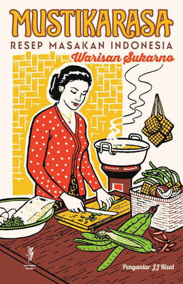
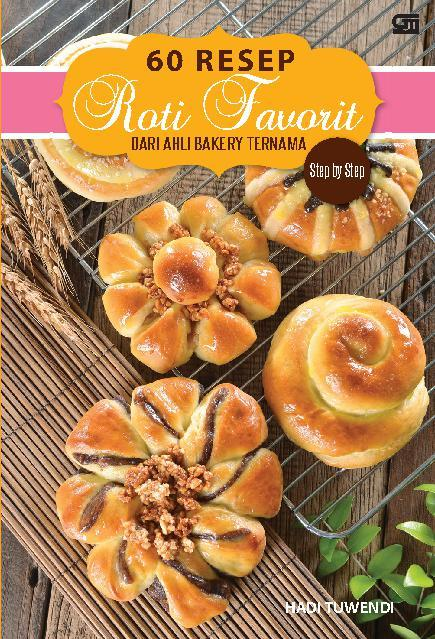

Buku Masakan
Temukan berbagai koleksi buku Masakan.

Mustika Rasa: Resep Masakan Indonesia Warisan Sukarno
Deskripsi:
Mustikarasa merupakan kumpulan resep masakan dari berbagai daerah di Indonesia warisan Presiden Sukarno. Sebab buku ini lahir atas gagasan Proklamator Republik Indonesia yang pencinta makanan dan merasa bahwa makanan adalah persoalan penting. Tak ayal makanan pun menjadi bagian dari derap politik revolusi yang didengungkan Sukarno sejak akhir 1950-an. Sukarno sebagai presiden memerintahkan mengumpulkan resep masakan Indonesia selengkap-lengkapnya. Bukan saja untuk mendokumentasikan dan menyelamatkan kekayaan warisan makanan minuman Indonesia yang beragam serta kaya pengaruh hasil silang budaya dalam sejarahnya yang panjang bertemu aneka bangsa, tetapi juga sebagai upaya memberi basis bagi politik pemertahanan pangan.

Profil Struktur Bumbu dan Bahan dalam Kuliner Indonesia
Deskripsi:
Dalam buku ini telah dilakukan bedah kuliner terhadap 34 “cuisine” Indonesia dari aspek struktur, bumbu, serta bahannya. Dalam buku ini terangkum profil struktur, bumbu, dan bahan dalam kuliner Indonesia yang terdiri atas ribuan jenis hidangan yang dapat tersaji di meja makan seluruh bangsa Indonesia yang sebelumnya belum pernah dihitung. Kuliner yang terkait dengan aspek sosial budaya dari berbagai etnis di Indonesia telah didapatkan dan dicari benang merahnya satu sama lain. Dari hasil penelitian ini didapatkan lebih dari tiga ribu nama hidangan yang terdiri atas makanan utama (208 macam), lauk pauk nabati dan hewani (1.800 macam), kudapan basah dan kering (hampir seribu macam), dan minuman dari seluruh negeri teridentifikasi hampir 150 macam. Hal ini merupakan salah satu bukti Indonesia merupakan dapur gastronomi terbesar di dunia. Biodiversity (keanekaragaman) yang sangat tinggi dipadu dengan lebih dari 130 jenis bumbu telah mendukung terciptanya hidangan seluruh negeri. Pembahasan bumbu khas daerah dapat dibaca dalam buku ini untuk mengetahui sebaran dan pancaran kenikmatan dalam seluruh pulau zamrud khatulistiwa yang termasyhur itu.

100 Resep Masakan Indonesia Populer Paling Laku Dijual
Deskripsi:
Bagi Anda yang ingin memulai usaha atau yang berkeinginan menambah penghasilan keluarga, mengembangkan usaha dari rumah sendiri bisa jadi pilihan yang paling tepat. Usaha rumahan merupakan usaha yang dilakukan di rumah sendiri. Suatu skala usaha kecil atau mikro yang biasanya dikelola perorangan atau keluarga. Usaha ini sangat banyak sekali macamnya. Yang paling mudah dilakukan adalah membuka usaha masakan rumahan yang digemari banyak orang. Buku ini memberikan alternatif resep-resep masakan paling laku dijual. Berisi 100 resep masakan Indonesia populer yang mudah cara membuatnya dengan citarasa yang lezat. Buktikan bahwa keuntungan bisa didapat dengan menjualnya.

100 Resep Masakan Indonesia Populer Ala Yongki Gunawan
Deskripsi:
Warisan kuliner negeri kita sangat kaya ragam. Satu di antaranya masakan tradisional. Beragam jenis resep masakan sudah ada sejak turun temurun. Kita tidak pernah tahu siapa yang menciptakannya. Yang jelas masakan-masakan itu sering kita nikmati dan sudah akrab di lidah. Ada yang kering, berkuah bening, dan kuah santan. Dan ada pula yang merupakan perpaduan rasa gurih dan pedas. Masakan tradisional diracik dengan berbagai bumbu, rempah hingga daun-daunan beraroma khas. Ada gulai yang dimasak dengan aneka rempah serta santan kelapa kental. Atau sambal goreng yang justru menonjolkan paduan rasa gurih dan pedas.

Dapur Masakan Prancis
Deskripsi:
Masakan Prancis (Cuisine française) adalah jenis masakan yang berasal dari Negara Prancis dan berbagai negara lain yang mendapat pengaruh budaya Prancis. Masakan Prancis termasuk jenis kuliner yang elegan, penuh warna dan kadang-kadang bernuansa kedaerahan yang kental. Selain itu, juga terkenal akan kelezatannya dan merupakan golongan kuliner yang rumit dan menantang untuk dikuasai. Bagi Anda yang ingin menyajikan masakan Prancis di rumah, Anda bisa mencobanya satu per satu atau menyajikannya satu menu sekaligus. Dalam buku ini tercantum resep masakan yang tidak terlalu sulit membuatnya. Mulailah dengan makanan pembuka, Anda bisa membuat Quiche Daging Asap atau Bruschetta Bawang Putih yang gurih. Kemudian sajikan salah satu jenis sup, Sup Bawang ala Prancis yang terkenal atau Sup Jagung Manis. Lanjut dengan makanan utama misalnya Dada Ayam Saus Mustard, Steak Daging Sapi, hidangan dari ikan atau seafood. Agar tercapai gizi seimbang kombinasikan dengan karbohidrat (kentang atau roti) dan sayuran (Salad Klasik saus Balsamic atau Selada Ayam saus Jeruk). Terakhir sajikan makanan penutup, misalnya Crepe ala Prancis yang lezat atau Plum Panggang yang klasik, beserta minuman & es krim. Pilihannya ada Cokelat Panas ala Prancis atau Koktil ala Prancis.

100 Resep Kue Dan Roti
Deskripsi:
Industri makanan adalah salah satu industri yang paling prospektif di dunia. Industri ini terus berkembang di mana-mana, baik dalam skala ru-mah tangga, usaha kecil menengah, maupun pabrikan. Buku 100 Resep Usaha Kuliner Kue dan Roti karya Lanny Soechan ini menampilkan resep-resep yang sudah teruji kelezatannya, lengkap dengan berbagai kiat sukses pengolahan resep sehingga para penikmat makanan pun akan tertarik untuk mencicipi hasil karya Anda. Jadi, jika Anda termasuk pencinta kuliner yang mulai melirik usaha boga, buku ini adalah buku yang tepat bagi Anda.

Cake & Cookies - Resep Antigagal
Deskripsi:
Buku resep serial Resep Antigagal kali ini: Cake & cookies Kuno Original, karya Yongki Gunawan, seorang pengajar dan konsultan di bakery terkenal, berisi resep-resep klasik cake dan cookies yang selama ini sudah menjadi favorit orang Indonesia. Biasanya cake dan cookies ini disajikan pada kesempatan istimewa seperti hari Raya, ulang tahun, dan pesta. Kini saatnya bagi pembaca untuk mengetahui rahasia resep lezat cake dan cookies ini. Di antaranya, Kaastengels Spesial Cookies dengan keju edam dan almond panggang; Lapis Legit penuh aroma mentega; Lapis Legit Mascovis Kukus dengan isian fruit mix, almond/kenari, ceri merah dan hijau, ditaburi cokelat bubuk; Lidah Kucing nan renyah dan harum mentega; Nastar Spesial cookies klasik yang selalu bikin penasaran dengan selai nanas harum manis buatan sendiri. Sosjisbrood dari roti tawar dengan isian daging/ayam.

Resep Kue dan Kudapan Tradisional & Populer ala @cheche_kitchen
Deskripsi:
Akun instagram @cheche_kitchen dengan sekitar lebih dari 128.000 followernya telah turut meramaikan dunia kuliner di media social. Penulis buku ini, pemilik akun instagram @cheche_kitchen, adalah seorang ibu rumah tangga kelahiran Batu Sangkar- Sumatera Barat, yang saat ini berdomisili di Riau. Hobinya memasak dilakukan secara ototididak khususnya masakan dan kue Minang dan Nusantara. Buku ini berisi kumpulan 60 resep kue dan kudapan tradisional dan populer, yang pernah diposting di instagram @cheche_kitchen dan banyak di- recook para followernya.

100 Resep KUE KERING
Deskripsi:
Ingin ikut mempraktikkan dan menikmati kue kering yang diajarkan di Kursus Masak Ny. Liem? Atau ingin memperkaya khazanah resep andalan di usaha boga Anda. Milikilah segera buku ini! Berisi 100 resep kue kering yang diajarkan di tempat kursus tersebut, seperti misalnya golden pineapple cookies, green tea cookies, butterfly cook-ies, rock`n roll cookies, dan nouget chocolate cookies. Kursus Masak Ny. Liem merupakan tempat kursus ma-sak yang sangat terkenal di kota Bandung dengan jum-lah murid mencapai ribuan, tersebar di seluruh Indonesia. Resep-resep masakan yang diajarkan di kursus Ny. Liem sangat diminati para pencinta dan praktisi boga, dan telah menjadi resep andalan puluhan usaha boga para alumninya.

Resep masakan padang
Deskripsi:
Indonesia adalah negara yang kaya akan keragaman kuliner. Hampir setiap daerah memiliki masakan tertentu dengan cita rasa yang khas. Salah satu daerah yang kaya akan jenis masakan adalah Kota Padang. Di sini ada beragam olahan yang lezat dan menggugah selera. Buku ini berisi berbagai jenis masakan Padang yang dapat diolah sendiri karena bahannya mudah didapat dan dikonsumsi bersama keluarga tercinta. Dengan demikian, kita bisa menikmati makanan yang lezat sekaligus bermanfaat bagi imunitas tubuh. Selamat mencoba.

Masakan Padang ala Resto Terlengkap
Deskripsi:
BUKU ini hadir dengan berbagai resep masakan padang terfavorit, mulai dari aneka lauk, sayur, sambal, hingga camilan ala restoran padang. Dengan resep yang kami sajikan ini, menu-menu masakan Anda akan lebih bervariasi. Bahkan, tak menutup kemungkinan, buku ini dapat menjadi sumber inspirasi untuk Anda berwirausaha membuka rumah makan padang. RESEP-RESEP yang disajikan juga telah lolos uji dapur sehingga dijamin kelezatannya. Selamat memasak dan dapatkan inspirasi Anda di buku ini!

Kumpulan Resep & Metode Masak Adiboga Khas Eropa
Deskripsi:
Bagi banyak orang, menikmati hidangan adiboga khas Eropa merupakan impian terpendam karena biasanya disajikan khusus untuk fine dining di resto-resto mewah dengan harga selangit. Mengapa kita tidak mengupayakan agar mimpi itu menjelma nyata tanpa harus merisaukan uang yang dikeluarkan? Dengan mengikuti panduan resep aneka masakan, saus, dan kaldu dari buku Adiboga Khas Eropa yang dilengkapi dengan metode masak dan cara penyajiannya yang khas, Anda pasti bisa menghidangkan sajian cantik bercita rasa tinggi yang tidak kalah dengan resto terkenal pada acara-acara khusus seperti makan malam di hari istimewa keluarga Anda, pesta pertunangan, atau ulang tahun pernikahan. Ada banyak sekali pilihan makanan pembuka, salad, sup, hidangan utama, hingga makanan penutup, yang bisa dipadupadankan sesuai dengan selera. Cobalah set menu Tomat Isi Nasi dan Ikan Tuna, Salad Seafood, Sup Labu, Kari Kerang Hijau, dan Mousse Cokelat. Atau Asparagus Dingin dengan Cuka, Salad Jamur, Sup Tomat dengan Blue Cheese, Bebek LOrange, dan Creme Brulee dengan Kismis. Jangan ragu untuk mencoba pula hidangan utama nan lezat Daging Sapi Stroganoff dan Dada Ayam dengan Mustard. Jadilah juru masak kebanggaan keluarga yang sukses memperkenalkan dan memperluas wawasan handai taulan mengenai dunia kuliner Eropa kelas atas.

Step by Step 60 Resep Roti dari Ahli Bakery Ternama
Deskripsi:
Membuat roti sendiri di rumah? Ya, mengapa ti dak? Satu hal yang terbersit di benak kita saat melihat aneka bentuk dan isi roti -roti yang dipajang di etalase adalah pembuatan yang rumit, makan waktu, dan biaya mahal. Ternyata membuat roti sendiri di rumah ti daklah sesulit apa yang kita bayangkan. Cobalah memprakti kkan resep-resep roti Beef Floss Buns seperti yang dijual di toko roti ternama, Roti Ayam Pandan, Tuna Snail, Red Ban Heart, Mexican Choco Chips, atau Sausage Flower. Hidangkan pada saat sarapan, dan nikmati kebahagiaan keluarga menyantap roti hangat buatan sendiri. Atau mulailah usaha boga Anda dengan menjual roti -roti canti k nan lezat di sekitar tempat ti nggal Anda.

Resep Praktis ala Resto Jepang Food Lovers
Deskripsi:
"Siapa yang tidak mengenal Restoran Jepang ? Dari Ebi Katsu, likkado, Shrimp Roli, sampai Beef Teriyaki ? Nah. bagi para ibu-ibu, kami menghadirkan kumpulan resep-resep mudah dan praktis yang dapat dipraktekkan sendiri di rumah bagi putra-putri tercinta Anda. Buku kumpulan resep praktis ini juga disajikan secara full colour, dan dilengkapi dengan foto-foto step by step yang memudahkan para ibu untuk mengikuti setiap langkah pembuatannya.

1000 RESEP CHINESE FOOD
Deskripsi:
Chinese food amat digemari masyarakat Indonesia. Rasanya yang gurih dan lezat sungguh membangkitkan selera makan. 1000 Resep Chinese Food kami sajikan untuk Anda, para penggemar masakan chinese. Buku ini merupakan buku resep chinese food terlengkap.

30 Resep Istimewa Rasa Italia: Pasta, Spaghetti & Salad
Deskripsi:
Buku ini memuat aneka resep pasta, spaghetti & salad termasuk variasi kuliner favorit banyak orang. Dilengkapi dengan tutorial aplikasi resep-resep dan gambar eksklusif, sehingga lebih menarik bagi para pembaca yang ingin mencoba ketiga resep tersebut.